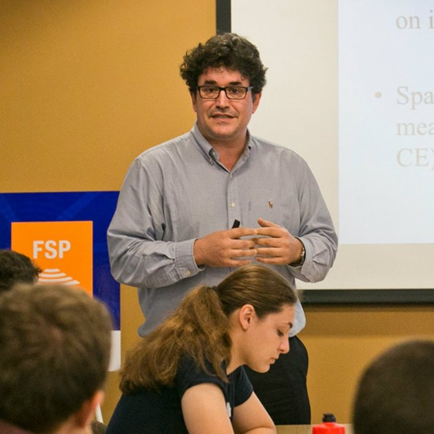

Members
The REPBIAS project has a first-class multidisciplinary academic team with researchers from leading universities around the world.
Principal Investigator: Marc Guinjoan
Marc Guinjoan is the Principal Investigator of the project. Guinjoan is an Associate Professor at the Universitat Oberta de Catalunya and previously was a research fellow at the Institutions and Political Economy Research Group (IPErG, Universitat de Barcelona), headed by Carles Boix. One of the main fields of interest of the PI is the study of electoral institutions. His thesis dissertation dealt with this topic and was published in 2014 by Routledge. He has also several journal articles on electoral institutions published in Government and Opposition, Public Opinion Quarterly and Social Science Quarterly, among others.

Research Team
Carles Boix is a Distinguished Professor at the IPErG (UB) and Robert Garrett professor at Princeton University. Boix, as director of the IPErG, Boix was the team leader in the Beramendi et al. (2021) project and he has in-depth knowledge and publication record on the field of electoral institutions. In particular, Boix has largely worked on the endogenous origins of institutions (Boix 1999; Abramson and Boix 2019; Boix and Stokes 2003), as well as on historical political economy (Boix 2010; Amat et al. 2020; Basu et al. 2019; Boix and Rosenbluth 2014). Boix’s publications have appeared in journals such as APSR (6 articles), AJPS (3), International Organization (IO: 2), CPS, the JoP, BJPS (2), Word Politics (WP: 3); in addition, he has three books in Cambridge University Press and one book in Princeton University Press, among others.

Jordi Mas obtained his PhD in 2016 and his research interests include political economy, international politics, regionalism, and methodology in social sciences. His work has been published in the JCMS. As an expert in R Statistics, Mas will guide and supervise all methodological parts of the REPBIAS project that require the usage of extensive quantitative data. Finally, he is also currently involved in a project aiming at expanding regionalism studies through the construction of large N datasets that will be of particular interest in the project.

Working Team
Pablo Beramendi is full professor at Duke University. His work focuses on different aspects of the political economy of inequality and redistribution, paying particular attention to the territorial dimension of distributive conflicts. Beramendi has articles published in CPS (4), IO, JoP (2), BJPS, WP, EJPR, Annual Review of Political Science, the Review of International Organizations (RIO), and 2 books in Cambridge University Press.

Melissa Rogers is associate professor at the Claremont Graduate University. She is a specialist in comparative politics, political geography, political economy, Latin American politics, and comparative political institutions. Her work has been published in the JoP (2), Political Analysis (PA: 2), RIO and she has one book in Cambridge University Press.

Toni Rodon is Assistant professor at Universitat Pompeu Fabra. His research interests include electoral participation, political geography, comparative politics and historical political economy. Rodon has extensively worked with data on the Second Republic (Rodon 2020; Muñoz et al. 2017; Amat et al. 2020) and he will thus contribute to the data management process, specifically with what concerns the electoral results and the debates over the creation of the limited vote electoral system during the Second Republic (RL3). Finally, Rodon has published in journals such as the APSR, JoP (2), BJPS, PSRM, Political Geography, JEPP and Socio-Economic Review

PHD student
Jaime Bordel is the author of the Book “Salvini & Meloni. Hijos de la misma rabia” and holds a Master in Social Sciences (Instituto Carlos III-Juan March)

Research Assistants
Xavier Roura is a Political Scientist (Universitat Autònoma de Barcelona) and holds a Master in Institutions and Political Economy (Universitat de Barcelona)

David Carbonell is a political scientist (Universitat de Barcelona) and a data analyst